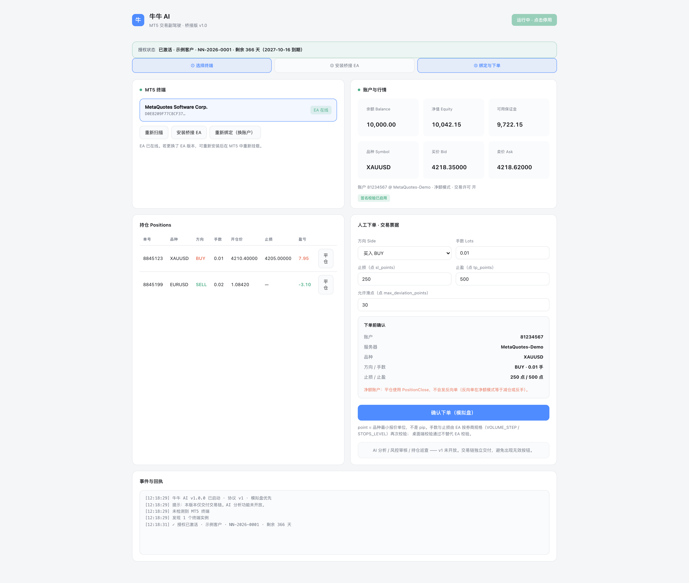
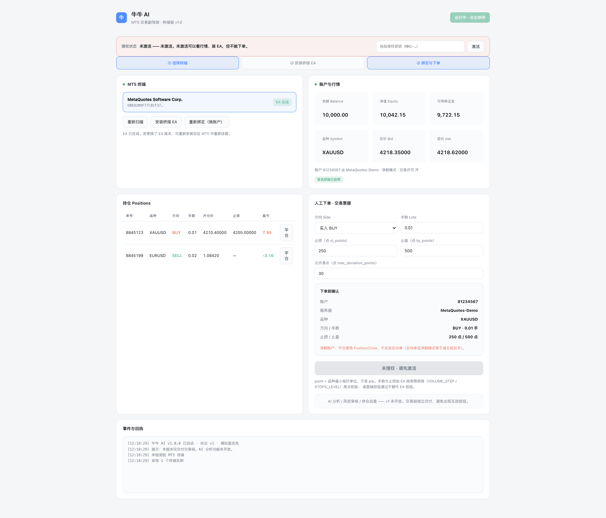
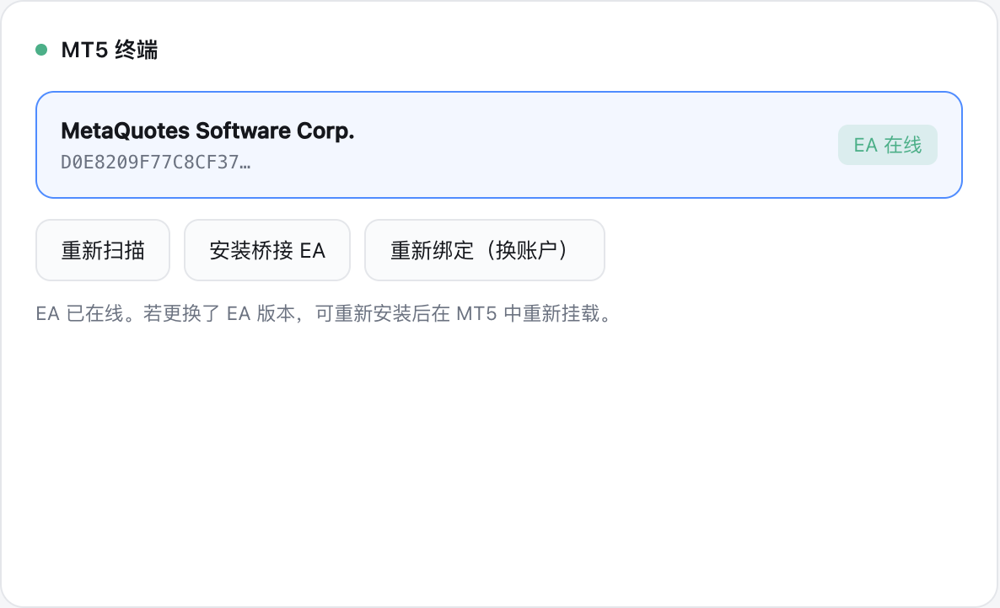
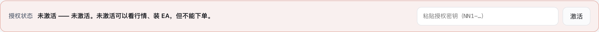
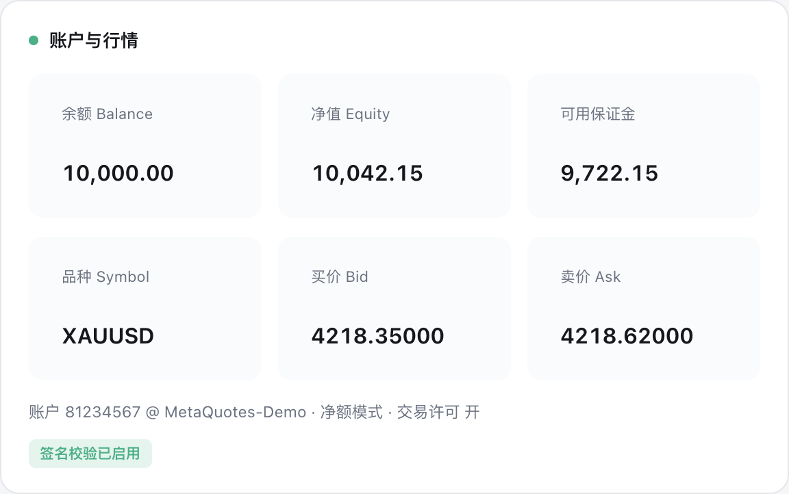
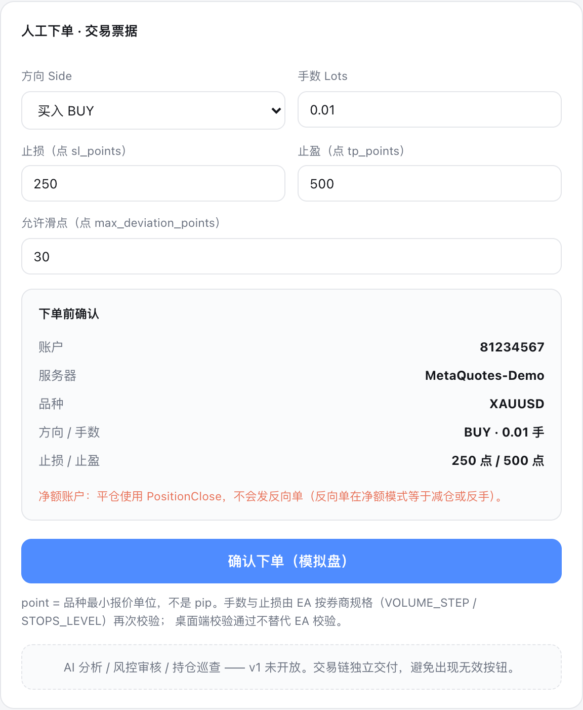
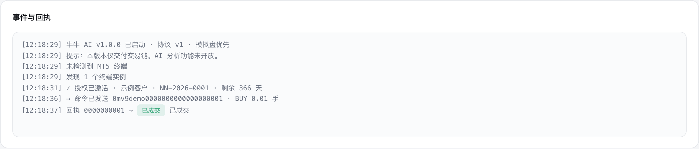
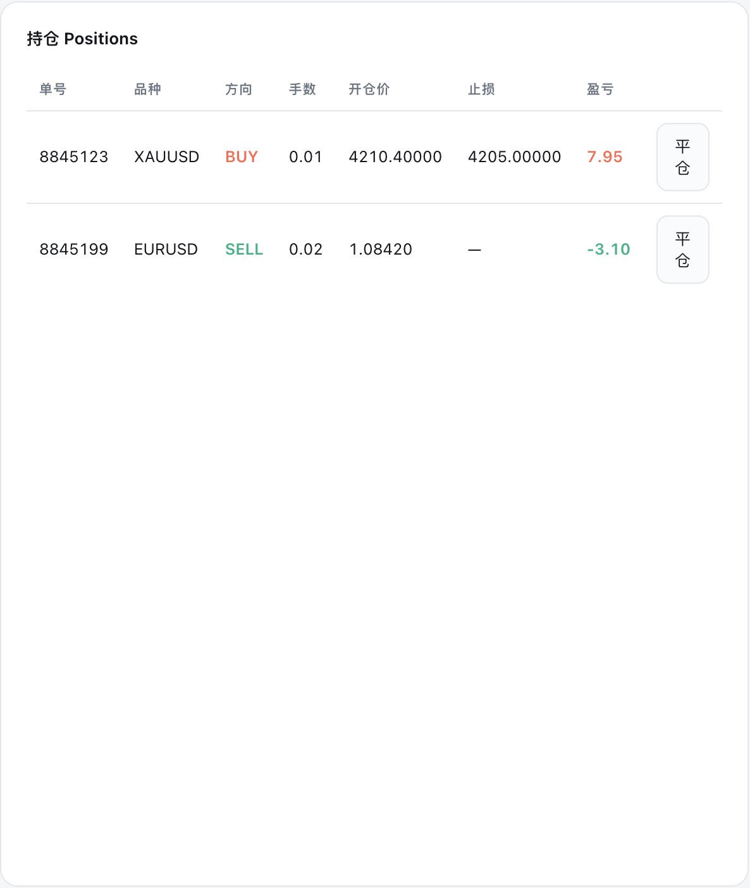

适用于 Windows 64 位 · 测试阶段请只用模拟账户 · 全程约 10 分钟
复制整串密钥（含开头的 NN1-）粘贴到软件顶部授权框，点「激活」即可。离线验签，不需要联网。
牛牛 AI 是一个装在你本机的交易辅助软件。它自己不下单，而是通过一个桥接 EA 接到你的 MetaTrader 5 上：你在牛牛 AI 里点下单，它把命令写成一个带签名的文件交给 MT5 里的 EA，EA 校验通过后才替你下单。
| v1 能做的 | v1 还没做的 |
|---|---|
| 自动找到本机 MT5 一键市价买卖（手数/止损/止盈） 一键平仓 实时看余额·净值·保证金·报价·持仓 全局急停、导出日志 |
未开放 AI 聊天 / AI 分析 未接线 自动更新 不做 macOS 版本 |
| 只允许模拟账户 | 实盘下单被拒，回执写「仅允许模拟盘」 | EA 参数 InpDemoOnly 改 false |
| 默认不允许下单 | 能连上、能看行情，但一下单就被拒，回执写「EA 自动交易开关关闭」 | EA 参数 InpAutoTrade 改 true装完必做，见第 4 节 |

到券商官网下载 MT5 安装包，装好并登录一个模拟账户。
登录后确认工具栏上有「自动交易 / Algo Trading」按钮。先别管它是开是关。

NiuNiuAI-Setup-1.0.0.exe。启动后应看到：顶部标题和「运行中 · 点击停用」，下面是 ① 选择终端 / ② 安装桥接 EA / ③ 绑定与下单 三个步骤条。

EA 已安装：…\MQL5\Experts\NiuNiuBridge.ex5 即成功。
牛牛 AI 只是把 EA 文件放进去了，它不会替你挂。必须手动挂一次：
InpAutoTrade → 改成 true ← 不改这个，下单一定失败InpDemoOnly → 保持 true（测试阶段）[NN] ═══ 牛牛 AI 桥接 EA 已启动 ═══。看右边「账户与行情」卡片：
| 你看到的 | 含义 | 该怎么办 |
|---|---|---|
| 余额/净值/保证金 有数字 | 已连上 | 继续 |
| 品种、买价、卖价 有数字 | 行情通了 | 继续 |
| 小字「签名校验已启用」（绿） | 安全链路通了 | 继续 |
| 红字「未启用签名 · 交易命令将被拒绝」 | 缺密钥 | 回第 3 节重点一次安装，再回第 4 节重启 EA |
| 一直「未连接 / EA 未运行」 | EA 没在跑 | 回第 4 节检查笑脸和自动交易按钮 |
左侧「持仓 Positions」会列出 MT5 里当前所有持仓。

在右边「人工下单 · 交易票据」卡片里填：
| 字段 | 说明 | 建议测试值 |
|---|---|---|
| 方向 Side | 买入 BUY / 卖出 SELL | 买入 BUY |
| 手数 Lots | 下单手数 | 0.01（最小手，测试用） |
| 止损（点） | sl_points，0 = 不设 | 0 或 250 |
| 止盈（点） | tp_points，0 = 不设 | 0 或 500 |
| 允许滑点（点） | 允许的价格偏离 | 30 |
填完先看下面的「下单前确认」小票：账户、服务器、品种、方向手数、止损止盈都对不对。不对就别点。确认无误后点「确认下单（模拟盘）」。
然后看底部「事件与回执」：
失败时回执会写明确原因，例如「手数越界」「止损距离小于 STOPS_LEVEL」「EA 自动交易开关关闭」。直接读文字就行，不用猜。

| 状态 | 什么意思 | 你要做什么 |
|---|---|---|
| 已发出 | 命令发出去了，EA 还没回话 | 等 |
| 已受理 | EA 校验通过，正在提交券商 | 等 |
| 已成交 | 券商确认成交 | 无 |
| 已拒绝 | 明确失败 | 读后面的原因 |
| 已过期 | 命令超过有效期才开始处理 | 可重发，不会重复成交 |
| 待核对 | 结果不明：请求可能已发出，但不知道成没成 | 去 MT5 看真实持仓，不要重复下单 |

在左边「持仓 Positions」表格里找到要平的那一行，点最右边的「平仓」。

| 想做什么 | 怎么做 |
|---|---|
| 紧急停止 | 点顶部「运行中 · 点击停用」→ 变成「⛔ 已停用」。已发出的命令仍会走完，这是对的 |
| 恢复 | 再点一次 |
| 彻底停止交易 | MT5 里点「自动交易」变红，或把 EA 从图表移除 |
| 导出日志给客服 | 用「事件与回执」区的导出功能存成 txt |
| 卸载软件 | 设置 → 应用 → 牛牛AI → 卸载 |
| 完全清理 | 卸载后还要在 MT5 里移除 NiuNiuBridge，并删掉 MQL5\Files\niuniu\ 文件夹 |
| 现象 | 原因 | 解决 |
|---|---|---|
| 显示「EA 未运行」 | EA 没挂到图表，或自动交易没开 | 回第 4 节，检查笑脸和绿色按钮 |
| 被拒：「EA 自动交易开关关闭」 | InpAutoTrade 还是 false | 第 4 节第 5 步改成 true |
| 被拒：「仅允许模拟盘」 | 登录的是实盘账户 | 换模拟账户 |
| 红字「未启用签名」 | EA 没拿到密钥 | 第 3 节重点安装 → 第 4 节重启 EA |
| 一直停在「已发出」 | EA 没在跑，或选错终端 | 多终端各自独立，确认选的是挂了 EA 的那个 |
| 被拒：「账户不匹配」 | 命令账号 ≠ 当前登录账号 | 点「重新绑定（换账户）」 |
| 换账户后旧命令失效 | 正常：代次 epoch 变了 | 无需处理，重新下单 |
| 被拒：「止损距离小于 STOPS_LEVEL」 | 止损设太近 | 把止损点数调大 |
| 右上角是 ✕ 不是笑脸 | 没允许算法交易 | 属性里勾「允许算法交易」 |
| 软件打不开 / 白屏 | 被杀软拦了 | 加白名单后重开 |
测完请按下面几条反馈实际结果，越具体越有用：